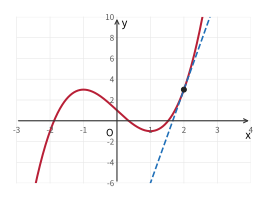

ホーム ＞ 数学II ＞ 微分法（接線・増減・極値）
曲線 \(y=x^{3} - 3 x + 1\) 上の点 \((2,\ 3)\) における接線の方程式を求めよ。
\(y=f(x)\) 上の点 \((a,\ f(a))\) における接線は、傾きが \(f'(a)\) で、\[y-f(a)=f'(a)(x-a)\] 手順：①\(f'(x)\) ②傾き \(f'(a)\) ③接点 \(f(a)\) ④公式に代入して整理。
接点は \((2,\ 3)\)。
\(y-f(a)=f'(a)(x-a)\) に代入する。

【答案（テストに書く形）】
答